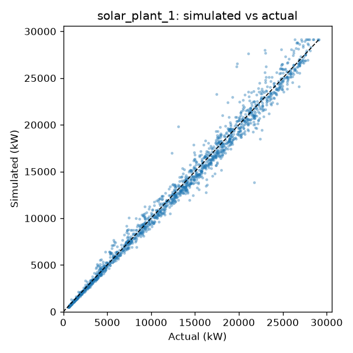
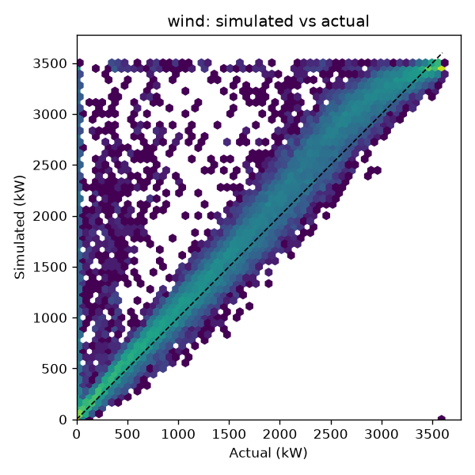
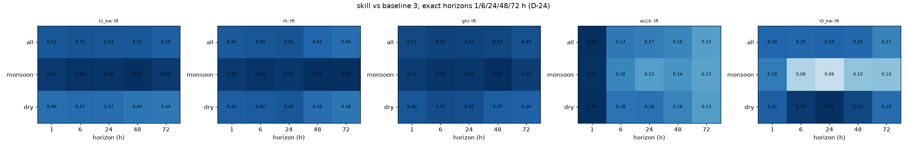
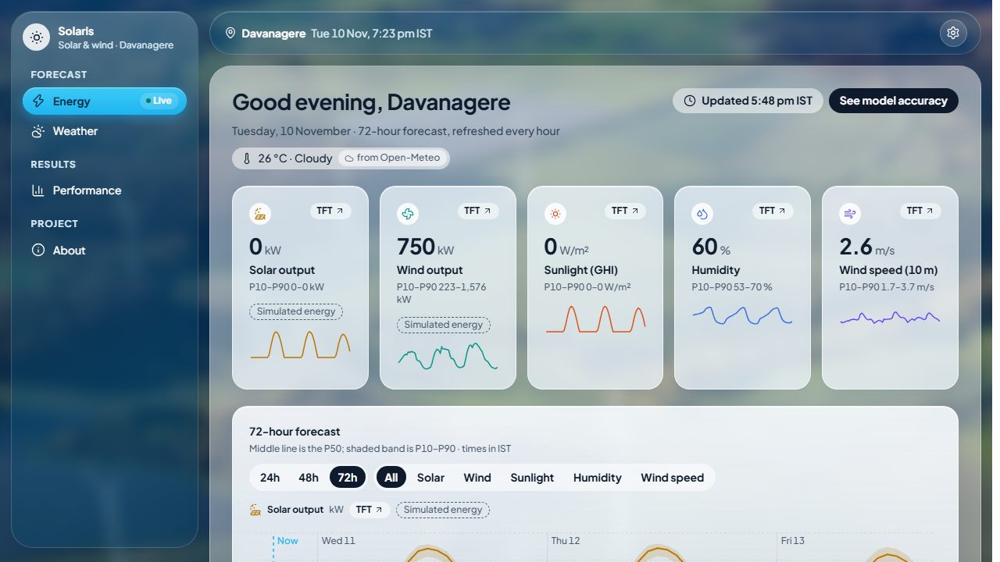
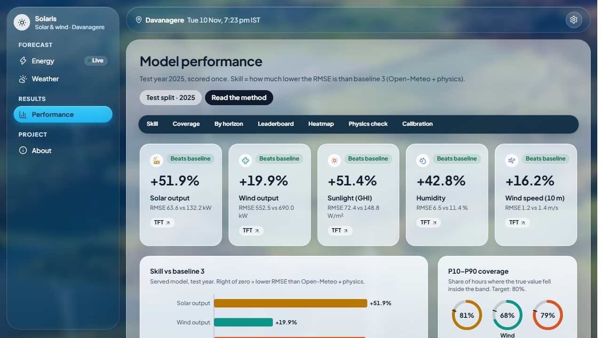
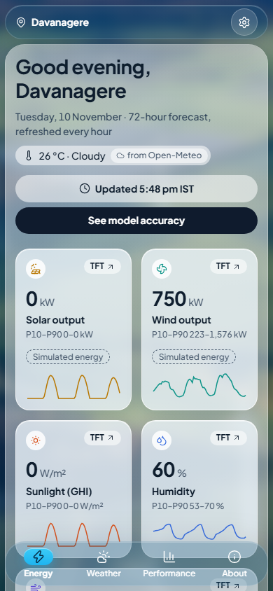

| Target | Unit | What the unit means |
|---|---|---|
| Solar power | kW (kilowatt) | How much electricity the solar panels make right now. 1 kW running for 1 hour = 1 kWh = 1 "unit" on an electricity bill. |
| Wind power | kW | How much electricity one wind turbine makes right now. |
| Sunlight (GHI) | W/m² (watts per square metre) | GHI = Global Horizontal Irradiance: how strong the sunlight is on flat ground. About 1000 W/m² at a sunny noon, 0 at night. |
| Humidity (RH) | % (percent) | RH = Relative Humidity: how much water vapour is in the air, from 0% (dry) to 100% (saturated, like fog). |
| Wind speed | m/s (metres per second) | Wind speed measured 10 m above the ground. 4 m/s ≈ 14 km/h. |
These five are physically linked: sunlight drives solar power, wind speed drives wind power, and humidity and clouds affect sunlight. That is why they are forecast together.
There is no real power plant with a meter at Davanagere that we can read. So the project uses an imaginary plant
placed at Davanagere, with realistic, standard specifications (from config/plant.yaml):
The power numbers are labelled "Simulated energy" on the website. They are calculated from the weather using physics (section 4). Do not say "India produces this"; the numbers are for this one small imaginary plant.
| Source | What it gives | Used for |
|---|---|---|
| NASA POWER | Hourly weather history for Davanagere from 2001 to 2025, from satellites and weather models. | The "truth" (what really happened) for training and for scoring forecasts. |
| Open-Meteo | Weather forecasts: past forecasts (history) and live forecasts for the next days. | Model inputs, baseline 3, and the live website every hour. |
| Kaggle (data-sharing website) | Real measured power from 2 solar plants in India and 1 wind turbine in Turkey. | Checking that the physics simulation is realistic. |
Rules followed: the weather services are called directly over the internet (no helper libraries), and every download is saved
in data/raw/ so nothing is downloaded twice. Credits: Weather data by Open-Meteo.com (CC BY 4.0) and
NASA POWER data courtesy of NASA Langley Research Center.
Time zones: all data is stored in UTC (world standard time). The website shows IST (Indian Standard Time = UTC + 5:30). Keeping one time zone inside the code avoids "5½-hour" mistakes.
Using pvlib, a standard solar-engineering library: find where the sun is in the sky each hour, work out how much sunlight lands on the tilted panels, estimate how hot the panels get (hot panels make less power), then convert to electricity with typical losses (14%) and the inverter limit.
Wind is measured at 10 m but the turbine hub is at 80 m, where wind is stronger, so the speed is adjusted to hub height. Then a power curve (a table from the manufacturer: "at this wind speed, this many kW") gives the turbine's output.
We ran the same physics on the weather recorded at the real Kaggle plants and compared with what those plants actually produced:


Every model gets the same job: given the past week and the weather forecast, predict the next 72 hours. Simplest to most advanced:
| Model | In plain words |
|---|---|
| Persistence | "Tomorrow will be like today." The simplest possible guess. |
| Climatology | "Use the usual value for this month and hour." A long-term average. |
| Baseline 3 (the important one) | Take the professional weather forecast (Open-Meteo) and convert it to power with the physics above. This is what you would get without any machine learning. Every model must beat this to be worth anything. |
| LightGBM | Many small decision trees ("if cloud cover > 60% and hour = noon, then…") combined. Fast and strong. |
| LSTM / GRU | Neural networks with "memory" that read the past hours in order, like reading a sentence word by word. (LSTM = Long Short-Term Memory, GRU = Gated Recurrent Unit.) |
| TFT (the winner) | Temporal Fusion Transformer: a modern deep-learning model that looks at the past and the future weather forecast together and learns which inputs matter most. It forecasts all five targets at once, with a likely range. |
The machine-learning models learn to correct the weather forecast's typical mistakes, rather than starting from nothing. Deep models (LSTM, GRU, TFT) were trained on your NVIDIA graphics card.
The data is split by time, never shuffled:
Test year 2025, TFT against baseline 3 (from reports/evaluation/leaderboard.csv):
| Target | Baseline 3 typical miss | TFT typical miss | TFT skill |
|---|---|---|---|
| Solar power (800 kW plant) | 132 kW | 64 kW (about 8%) | +51.9% |
| Sunlight (GHI) | 149 W/m² | 72 W/m² | +51.4% |
| Humidity | 11.4 % points | 6.5 % points | +42.8% |
| Wind speed | 1.38 m/s | 1.16 m/s | +16.2% |
| Wind power (3600 kW turbine) | 690 kW | 552 kW (about 15%) | +19.9% |
| Target | Tomorrow | Day 2 | Day 3 |
|---|---|---|---|
| Solar power | ~62 kW | ~66 kW | ~67 kW |
| Sunlight | ~66 W/m² | ~71 W/m² | ~71 W/m² |
| Humidity | ~7 % pts | ~8 % pts | ~8 % pts |
| Wind speed | ~1.1 m/s | ~1.2 m/s | ~1.4 m/s |
| Wind power | ~535 kW | ~567 kW | ~626 kW |
Forecasts get a little less accurate the further ahead they look. These are averages: a clear day may be almost perfect, a sudden storm can miss more. The accuracy is the same whatever the date (11 November, 5 December, or later).

Four pages: Energy (solar & wind power), Weather (sunlight, humidity, wind), Performance (all the results and charts),
About (data credits). Every hour it fetches a fresh Open-Meteo forecast, runs TFT, and saves the result in a small database
(data/app.db). Pages load in well under half a second because they read from that saved copy.



If there is no internet: the site still opens and shows the last forecast with a yellow "may be out of date" note. That is by design.
uv run python -m swf serveOther commands (only needed to rebuild from scratch, explained in README.md): data (download and process),
train (retrain models, needs the graphics card, hours), evaluate (re-score). Do not retrain before the viva:
the saved models are the ones behind the official results.
| Folder / file | Job |
|---|---|
config/*.yaml | All settings: location, plant size, model settings. Nothing is hard-coded elsewhere. |
src/swf/cli.py | The commands: data, train, evaluate, serve. |
src/swf/fetch/ | Downloads NASA, Open-Meteo and Kaggle data; saves raw copies. |
src/swf/align/ | Cleans data and puts everything on one hourly UTC timetable. |
src/swf/physics/ | Weather → solar and wind power. |
src/swf/validate/ | Compares simulated power with the real Kaggle plants. |
src/swf/features/ | Builds the model inputs without peeking into the future; makes the time splits. |
src/swf/models/ | LightGBM, LSTM/GRU and TFT. |
src/swf/evaluate/ | Scores, leaderboard, charts, the one-time test run. |
src/swf/predict/ & src/swf/api/ | Makes the live 72-hour forecast; the web server (FastAPI) and hourly refresh. |
frontend/ | The website (React). |
tests/ | 478 automatic checks, including "no peeking into the future" tests. All pass. |
Tools used: Python (main language), pandas (tables), pvlib (solar physics), LightGBM, PyTorch and darts (deep learning), FastAPI (web server), SQLite (small database), React + Vite + Tailwind + Recharts (website and charts).
It is simulated from real weather with standard physics, and the simulation was checked against real Kaggle plants (about 3% error on the good solar plant, wind within target).
Every model is compared with baseline 3 (the professional forecast + physics) on a year it never saw, scored once. TFT beat it on all five targets.
That would let the model see the future during training and give fake-good scores. We split by time: train 2001–2023, choose on 2024, test on 2025.
It had the lowest error on all five targets, and using one model keeps the website and results simple and consistent.
No forecast is exact. On average it misses solar by about 8% of plant size for tomorrow, and the shaded band shows how sure it is.
The NASA POWER weather record (from satellites and weather models) plus the simulated power. There is no ground weather station at the site, which is a limitation worth mentioning.
The wind ranges are too narrow (catch the real value 66–68% instead of 80%). Also, the historical forecasts used for training are short-range, while live forecasts look 1–3 days ahead, so the model can be slightly over-confident.
One time zone everywhere prevents 5½-hour mix-ups; IST is shown only on the website.
Yes. A fresh copy of the project was tested on 10 November using only the README instructions, and every step worked.
Put the site online for the public, and fix the wind ranges so they reach 80%.
| Forecast horizon | How far ahead: 1 to 72 hours. |
| NWP | Numerical Weather Prediction: the computer weather forecasts that weather services make (Open-Meteo gives these). |
| Baseline | A simple reference method that a smarter model must beat. |
| Training / validation / test | Learn / choose / final exam. |
| Leakage | Accidentally letting a model see future information. The tests check this never happens. |
| P50, P10, P90 | Best guess (middle), low end and high end of the likely range. |
| Overfitting | Memorising the training data instead of learning patterns. Prevented by validating on 2024 and stopping training when it stops improving. |
| API | Application Programming Interface: the address the website uses to ask the server for data (/api/forecast). |